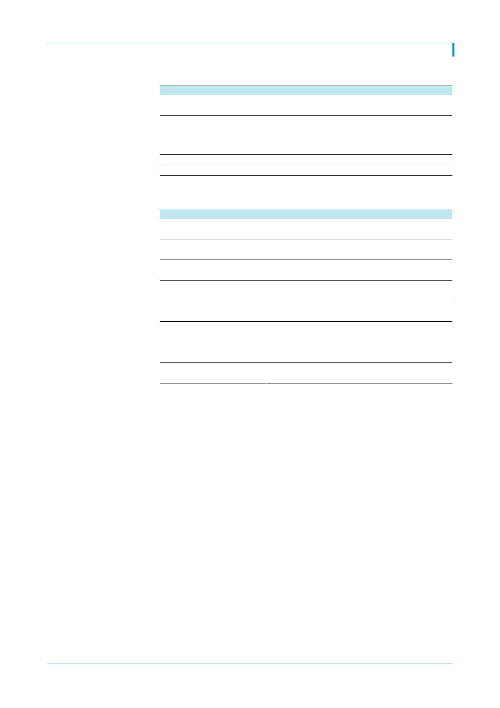

두산중공업(034020)
<표 1> 시민참여단 구성 포함한 원전공론화위원회 향후 일정
일정
8. 25
9. 11
-
-
10. 15
내용
1 차 조사
- 지역, 성별, 연력 고려 확률추출을 통해 선발된 2 만 여명의 시민이 참여
시민참여단 구성
- 1 차 조사 응답자 중에서 숙의과정에 참여 의사가 있는 시민 중 확률 추출을 통해
선정된 500 명으로 구성
숙의과정(학습과 토론)
최종조사
결과도출
자료: 공론화위원회 공식 홈페이지, 한국투자증권
<표 2> 원전공론화위원회 구성
이름
김정인
유태경
김영원
김원동
류방란
이성재
이윤석
이희진
분야
인문사회
과학기술
조사통계
갈등관리
인문사회
과학기술
조사통계
갈등관리
주요 약력
- 현 수원대 법행정학부 교수
- 경기도의회 입법정책위원회 위원
- 현 경희대 화학공학과 부교수
- 한국화학공학회 에너지 환경부문 운영위원
- 현 숙명여대 통계학과 교수
- 한국조사연구학회 회장
- 현 강원대 사회학과 교수
- 강원대 사회과학대 학장
- 현 학국교육개발원 부원장
- 한국교육개발원 기획조정본부장
- 현 고등과학원 물라학부 교수
- 시카고대 엔리코 페르미 펠로우
- 현 서울시립대 도시사회학과 교수
- 한국조사연구 학회 학술이사
- 현 한국갈등 해결센터 사무총장
- 서울시 갈등관리심의위원회
자료: 공론화위원회 공식 홈페이지, 한국투자증권
2